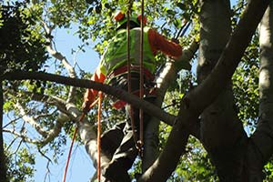
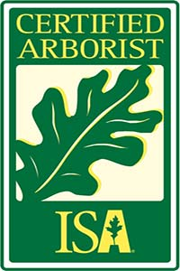
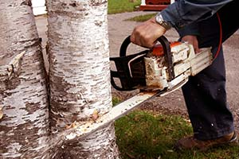
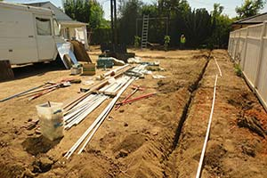
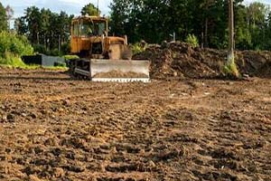

Tree trimming
Trimming, pruning, thinning, shaping, and maintenance for large Pasadena trees.
Tree trimming, removals, irrigation, lot clearing, and landscape work from a licensed, bonded, insured Pasadena crew with ISA arborist certification.

JR's says the company is a California licensed tree service and holds ISA Arborist certification.
Pasadena yards get big trees, old roots, steep slopes, drought stress, and fire-season cleanup. JR's work gets practical fast: broken branches, sick trees, foundation damage, wind damage, irrigation, drought-tolerant planting, and lots that need clearing.
The work is practical: keep trees healthy, remove what is unsafe, keep water moving, and clear the overgrowth before it becomes a problem.

Trimming, pruning, thinning, shaping, and maintenance for large Pasadena trees.

Removal for diseased, damaged, fallen, fire-hit, or structure-threatening trees.

Lawns, irrigation systems, drought-tolerant landscapes, planting, and hardscapes.

Brush, shrubs, trees, vegetation, debris, and commercial or residential clearance.
One reviewer says JR helped on a historical restoration in Pasadena where an arborist was involved and the work had to satisfy several people. That is the kind of detail worth leading with for tree care: careful work, visible stakes, local properties.
Three published customer reviews point to the same thing: JR answers the phone, knows the trees, and brings a crew that finishes the job.
“JR and his crew worked hard and completed the work to everyone's satisfaction.”
“Jesus picked up within two rings, met me at the property an hour later, and named every single tree on my lot.”
“It's been more than three years now and we're still happy with Jesus and his crews.”
For trimming, removals, irrigation, landscape work, or lot clearing around Pasadena, call JR's directly.
For directions, reviews, and the business pin, open the JR's Tree Service and Landscape listing on Google Maps.